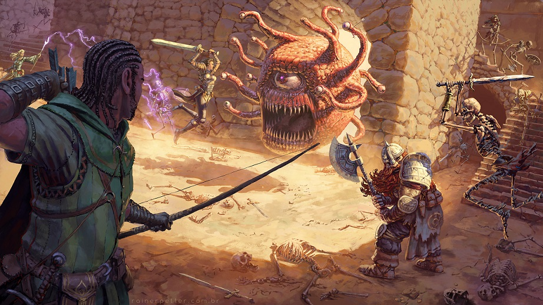

|
Лор D&D  Типичная игра Dungeons & Dragons состоит из "приключения", которое примерно эквивалентно одной истории. DM может либо создать оригинальное приключение, либо следовать одному из многих готовых приключений (также называемыми «модули»), которые публикуются на протяжении всей истории Dungeons & Dragons. Опубликованные приключения обычно включают в себя историю, иллюстрации, карты и цели, которые требуется достичь игрокам. Некоторые из них включают описание местоположения и раздаточные материалы. Хотя небольшое приключение «Temple of the Frog» было включено в дополнение к правилам Блэкмура в 1975 году, первым самостоятельным модулем D&D, опубликованным TSR, был «Steading Of The Hill Giant Chief», написанный Gygax. Связанная серия приключений обычно называется «кампания». Места, где происходят эти приключения, такие как город, страна, планета или вся вымышленная вселенная, называются «сеттингом кампании» или «миром». Сеттинги D&D основаны на различных жанрах фэнтези и имеют различные уровни и типы магии и технологий. Помимо использования готовых сеттингов, DM может разрабатывать свои собственные вымышленные миры для использования в качестве сеттинга кампании. |